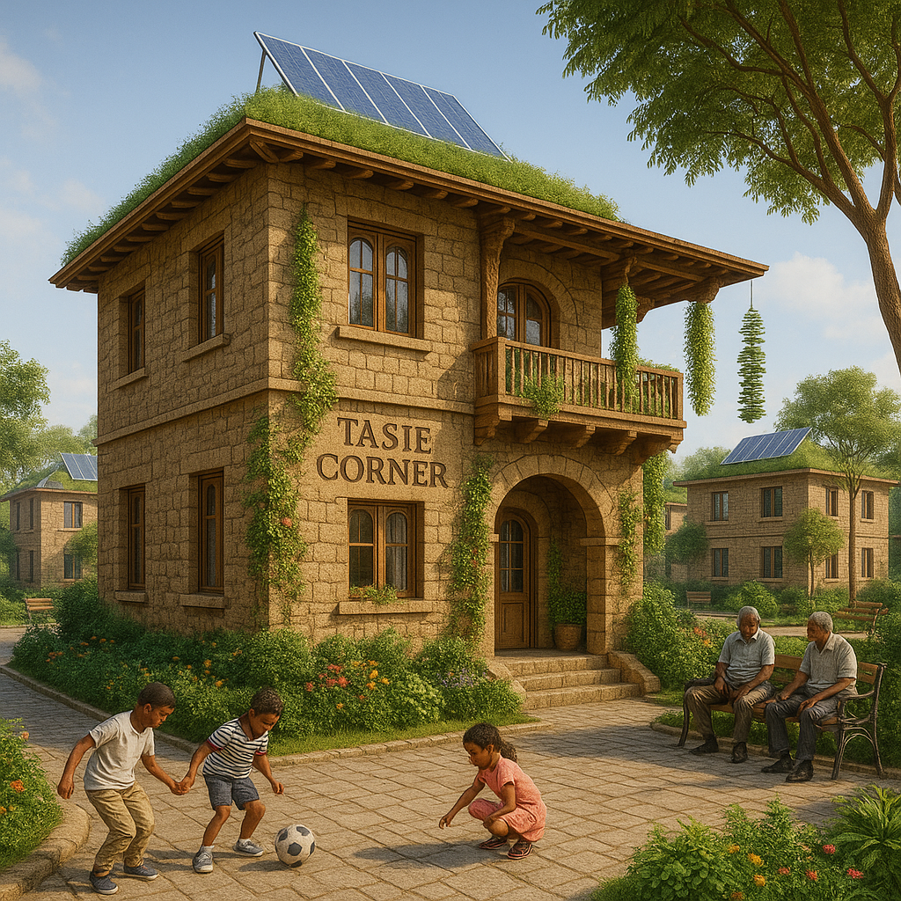

Welcome to Kazanchis
A historic neighborhood erased — but never forgotten. We rise.
We are reclaiming our city, memory, and dignity. Through testimony, architecture, and action, we are building a new future rooted in justice for all displaced and persecuted peoples of Ethiopia.
🟥 Kazanchis Babylon

from babylon with love. Kazanchis Addis Ababa. the eternal land of legends.
🟥 Kazanchis Rising

Modern eco-complex built from the rubble of Kazanchis, merging history with tech-forward housing justice.
🟦 Felige Asfeligie

Inspired by Tilahun Gessese’s lost love home. This is a place for music, resilience, and beauty reborn.
🟨 Imru Heights

A towering tribute to Ras Imru Haile Selassie’s stand against fascism and betrayal.
🟩 Tasie Corner
A corner of strength, memory, and Menelik-era pride, built after Grazmach Tasie’s heritage home.
Our Campaign
This is a living archive and a movement to restore, remember, and rise. We stand with the displaced, honor the dead, and build a new Ethiopia that never forgets its roots.